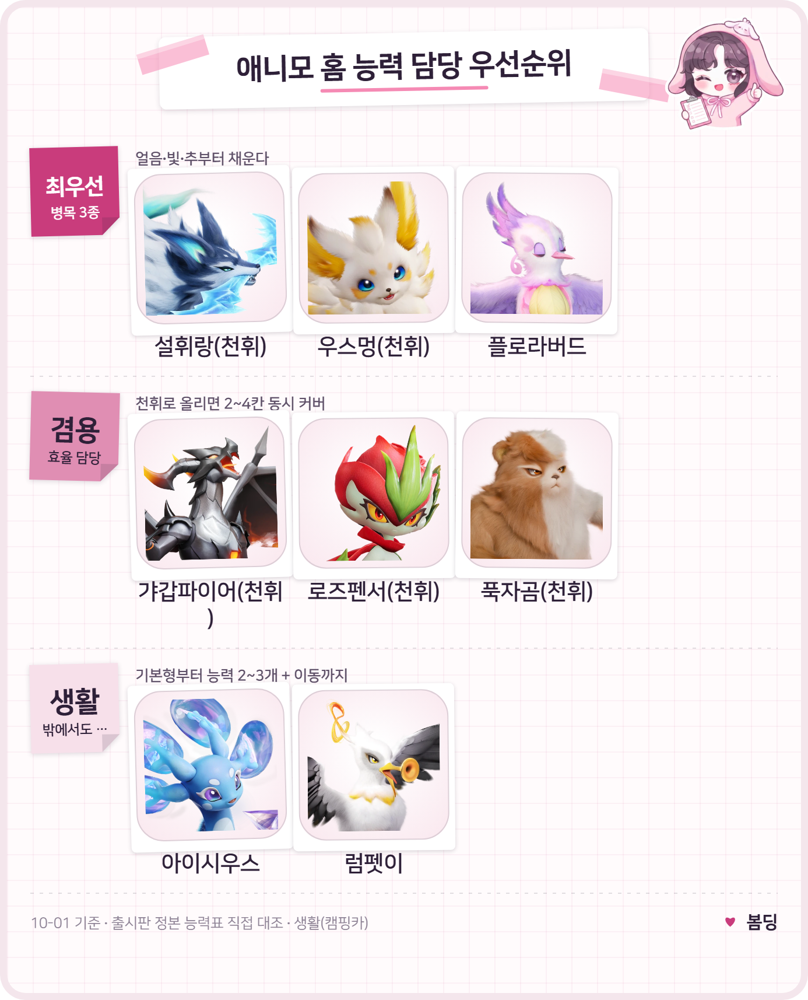
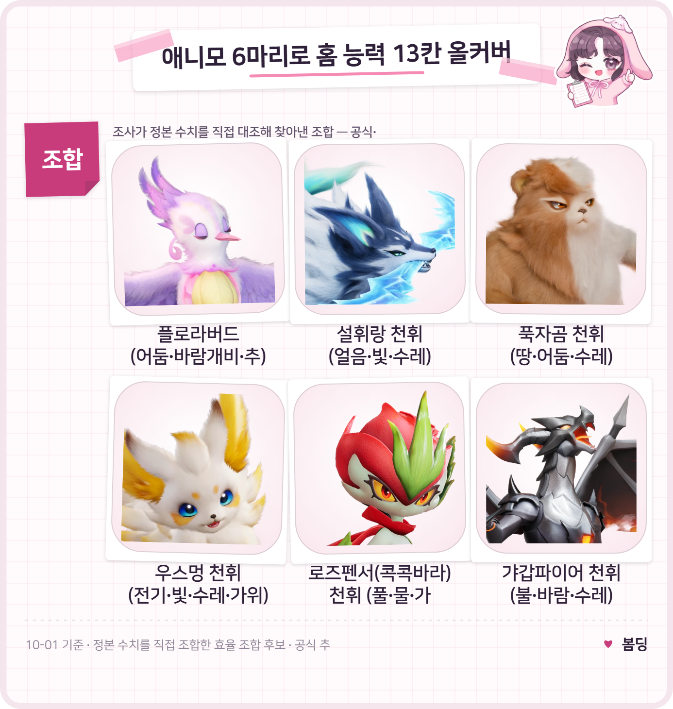

애니모 생활티어표 정식출시판 정리, 홈능력 담당부터 탐사스킬 이동능력까지
애니모가 PC·콘솔로는 9월 16일, 모바일로는 9월 23일에 정식 출시했는데요, 보름 가까이 지나며 패치도 몇 차례 더 들어왔습니다. 저도 출시 전 시연판 때부터 캠핑카를 굴려오다가 정식 출시 이후 집을 통째로 다시 꾸리면서 홈 능력 담당을 처음부터 새로 짜봤는데요, 직접 돌려보니 시연판 때랑 체감이 꽤 다르더라고요. 그래서 이번엔 사전 시연판 말고 출시판·10월 1일 기준 최신 패치로 홈 능력이랑 탐사 스킬을 한 번에 정리해보려고 합니다. 저번 「캠핑카 생활 티어표 추천」 글은 홈 능력 13종만, 「탐사 스킬 19종 총정리」 글은 밖에서 쓰는 스킬만 따로 다뤘는데, 이번 글은 그 둘을 생활 동선 하나로 묶어서 집 안엔 누굴 앉히고 밖엔 누굴 데리고 다닐지 한 번에 보여드리는 게 목적이에요.
✔ 애니모 같이 보기 좋은 내용
· 애니모 캠핑카 생활 티어표 추천, 홈 능력 13종 정리
· 애니모 탐사 스킬 19종 총정리, 가속·이륙·은신 뭐가 있나
· 애니모 용어 총정리, 천휘 애니모 획득부터 희귀도 평가 차이부터 선천 후천 어빌리티, 옵시디언까지
홈 능력 13종, 병목부터 짚고 갈게요
결론부터 말씀드리면 얼음·빛·추 이 세 능력이 병목이에요. 레벨이 높고 낮고를 따지기 전에, 애초에 '이 능력을 가진 애니모가 있나' 자체가 갈리는 칸들이거든요.
- 얼음(냉각)은 기본형 중 Lv3 보유가 스탈크랩·설휘랑, 딱 2종뿐이네요.
- 빛(조명)은 기본형 보유가 루나센·헬리온 2종뿐인데 둘 다 특수 번호라 입수부터 까다롭고, 나머지는 확인된 범위에서 천휘 형태로 전환해야만 얻어지는 종이 6종이에요(아이시우스·플로리안·설휘랑·나이트스타·우스멍·샹들라젤리). 썬더스퀵(볼트맨티스) 천휘도 빛으로 바뀐다고는 하는데, 이 종은 홈 능력 레벨 데이터가 따로 수집되지 않았어요.
- 추(향수 제조)는 전체 보유가 허니버드·플로라버드 2종뿐이고, Lv3는 플로라버드 혼자라서 확인된 범위에선 천휘 형태가 없어 아예 대체할 길이 없어요.
그래서 이 글의 추천 순서는 '레벨 높은 애니모부터'가 아니라, 병목부터 메운 다음 겸용으로 나머지를 채우는 쪽으로 짰습니다. 병목 셋을 먼저 처리하지 않으면 나머지 10칸을 아무리 잘 배치해도 결국 얼음·빛·추 자리가 비어 생산이 겉돌 수밖에 없거든요. 그래서 아래 표도 '어떤 애니모가 세냐'가 아니라 '누가 병목을 뚫어주느냐'를 기준으로 줄을 세웠어요.
그럼 13칸, 누구한테 맡기면 되나요
원소 9개는 Lv3 보유종이 다 있어서 고르는 재미가 있는데, 작업 4개(수레·가위·바람개비·추)는 종마다 겸용 능력이 갈리기 때문에 한 마리로 여러 칸을 동시에 메우는 쪽이 효율적이에요. '수레·가위·바람개비·추' 명칭은 아직 미확정이라 편의상 표기로만 써요🔍 인게임 명칭 확인.
| 능력 | 추천 담당 | 비고 |
|---|---|---|
| 불 | 갸갑파이어 | 천휘면 바람까지 겸용 |
| 풀 | 로즈펜서(콕콕바라) | 천휘면 물까지 겸용 |
| 물 | 아이시우스 | 기본형부터 물+얼음+수레 3능력 |
| 땅 | 푹자곰 | 채굴 1순위(커뮤니티 중론) |
| 전기 | 우스멍 | 천휘면 빛·가위도 겸용 |
| 얼음 | 설휘랑 | 병목① Lv3 2종뿐 |
| 바람 | 럼펫이 | 비행 Lv3라 밖에서도 겸용 |
| 어둠 | 플로라버드 | 어둠+바람개비+추 3능력 |
| 빛 | 설휘랑·우스멍(천휘) | 병목② 2종뿐, 나머진 천휘만 |
| 수레 | 겸용 다수 | 38종 보유, 여유 |
| 가위 | 로즈펜서·우스멍(천휘) | 겸용 재사용 |
| 바람개비 | 플로라버드 | 겸용 재사용 |
| 추 | 플로라버드 | 병목③ 전체 2종, Lv3는 1종뿐 |
우선순위로 묶으면 최우선 병목(설휘랑·우스멍·플로라버드) → 효율 겸용(갸갑파이어·로즈펜서·푹자곰) → 생활 겸용(아이시우스·럼펫이) 순이에요.

홈 능력, 병목부터 효율 겸용까지 우선순위로 묶어봤어요.
티어표 초상: 애니모 공식 위키
작업 속도는 레벨이 높을수록 빠르다는 게 정설인데, 정확한 수치는 아직 인게임 실측이 아니랍니다(아래 FAQ 참고)🔍 작업 속도 인게임 실측.
천휘 형태가 되면 홈 능력이 어떻게 바뀌나요
대체로 기존 능력이 1레벨 올라가고(최대 Lv4), 운이 좋으면 원소 능력이 1개 추가돼요 — 다만 전부는 아니에요.
- 능력 추가 있음 — 설휘랑(얼음3→4·수레3→4, 빛3 신규), 우스멍(전기3→4, 빛3·가위4 신규. 가위는 작업 능력), 로즈펜서(콕콕바라)(풀3→4·가위3→4, 물3 신규)
- 레벨만 오르는 종은 이글랑(불3→4·수레3→4)과 둔둔달(물3→4·바람개비3→4)인데, 둘 다 새 능력 추가는 없어요.
- 천휘 데이터 자체가 없는 종 — 플로라버드
지역 형태는 원소를 더하거나 빼기도 해요 — 탄멍멍 고지 형태는 땅 능력이 붙고, 풀크랩은 바다만·해변·습지 형태로 가면 풀 능력이 아예 빠져요. 빛 능력이 병목인 이유도 이 구조 때문이에요. 기본형 86종 중 빛 보유가 2종뿐이라, 나머지는 천휘로 올려야만 얻는 셈이죠.
6마리로 13칸 다 채우는 조합도 있을까요
있습니다 — 제가 능력표를 하나씩 맞춰가며 직접 조합해보니 플로라버드·설휘랑·푹자곰·우스멍·로즈펜서(콕콕바라)·갸갑파이어, 이 6마리(그중 5마리는 천휘 형태)만으로 13칸이 전부 채워지더라고요. 처음엔 병목 셋만 해결하면 나머지는 아무렇게나 채워도 될 줄 알았는데, 겸용 능력을 꼼꼼히 맞춰보니 의외로 6마리 안에서 13칸이 전부 떨어지는 조합이 나와서 저도 신기했어요. 그래서 이번 글에서 가장 추천하고 싶은 조합이 바로 이 여섯 마리입니다.
- 플로라버드(기본형) — 어둠·바람개비·추
- 설휘랑(천휘) — 얼음·빛·수레
- 푹자곰(천휘) — 땅·어둠·수레
- 우스멍(천휘) — 전기·빛·수레·가위
- 로즈펜서(콕콕바라)(천휘) — 풀·물·가위
- 갸갑파이어(천휘) — 불·바람·수레

6마리 조합표 — 괄호 안이 그 애니모가 커버하는 능력이에요.
티어표 초상: 애니모 공식 위키
다만 포획 난도나 천휘 전환 재화, 실제 작업 속도까지 고려한 완전체 최적은 아니에요. 공식 추천이 아니라 이번 조사가 직접 찾아낸 효율 조합 후보로 봐주시면 좋겠네요.
탐사 스킬 19종, 밖에서는 뭘 들고 다니면 좋을까요
동선 기준으로 보면 ①이동(가속·돌격·점프류) ②공중·수상·수직 이동(비행·수영·등반) ③은신·탐지·접근 ④환경 조작(조명), 이렇게 네 갈래로 나뉘어요. 다만 공식 설명 19종엔 '채집'·'상자'라는 단어가 직접 나오지 않아서, 아래는 공식 기능을 근거로 생활 동선에 묶어본 분류예요🔍 상자 연관 공식 미확인.
- 이동은 가속(탄멍멍·설휘랑 등 11종), 하이 점프(라이트밍·볼트밍), 가속 돌진(마그라곤 유일)으로 나뉘어요.
- 공중·수상·수직 쪽은 비행 Lv3가 럼펫이·우스멍·폼폼버드, 수영 Lv3는 둥실달, 등반 Lv3는 볼트밍인데, 폼폼버드는 비행+수영을 같이 가져 이동 능력 총합이 제일 높답니다.
- 은신·탐지·접근은 은신이 싹뚜기·서걱리퍼·볼트맨티스(썬더스퀵), 탐지의 눈이 투구누니·아머누니 담당이고, 갈고리(누니용사 유일)는 화면 중앙 방향으로 끌어당겨 이동하는 접근형 스킬이라 높은 곳이나 먼 상자·보물에 접근할 때 메커니즘상 유용해 보여요.
- 환경 조작은 조명 씨앗(위치그라스/위치햇그라스), 발광 조명(램프젤리·루미젤리·샹들라젤리)이 어두운 구간 탐색을 보조해줘요.
결국 밖에 데리고 다닐 1순위는 폼폼버드예요 — 하늘길·물길을 동시에 커버하거든요.
캠핑카는 어떤 흐름으로 돌아가나요
시설이 레벨로 열리고, 그 시설에 맞는 능력을 가진 애니모를 배치하면 생산이 돌아가는 구조입니다. 저도 처음엔 아무 애니모나 앉혀놓고 왜 생산이 안 되나 한참 헤맸는데, 알고 보니 시설마다 요구하는 능력이 따로 있더라고요. 그래서 아래처럼 해금 시점이랑 필요 능력을 먼저 짚고 가는 게 헤매지 않는 길이에요.
- 해금은 2레벨에 '밀 20개 줍기'로 올리고 수확이 2레벨부터 가능하다고 하고, 6레벨엔 꿀 양조·화로·목공이 열린다고 하는데 둘 다 커뮤니티 글 1건 기준이라 교차 확인은 안 된 상태예요(아래 FAQ 참고).
- 생산 — 화로는 불(요리), 양조는 물(급수), 냉방기는 얼음(냉각) 능력이 필요해요. 이 3개만 한국 커뮤니티로 교차 확인됐어요.
- 출시판 홈 콘텐츠(공식 '개발팀의 편지', 9월 3일 발표)로 홈 다중 구역 확장·주택 건설, 애니홈즈 재구매소(가구를 되파는 곳), 밭 갈기(다른 모험가 밭을 도와주는 기능)가 들어와 있어요.
참고로 파견은 시설 배치랑은 별개의 트랙이에요 — 애니모를 캠핑카에 앉히는 게 아니라 밖으로 보내는 개념이에요(아래 FAQ 참고)🔍 파견 확률 공식 미공개.
자주 묻는 질문
Q. 작업 속도가 레벨마다 정확히 얼마나 차이 나나요?
영문 팬사이트 교차 수치로 Lv1 분당 60에서 Lv4 분당 105라고는 하는데, 한국어 인게임 실측이 아니라서 참고만 해주세요.
Q. 캠핑카 시설은 레벨 몇에 열리나요?
지금까지 알려진 건 2레벨 '밀 20개 줍기', 6레벨 꿀 양조·화로·목공 두 구간인데, 둘 다 커뮤니티 글 1건 기준이라 교차 확인은 안 됐어요. 나머지 레벨 구간의 전수 해금표도 아직 확인되지 않았고요.
Q. 파견을 보내면 천휘 특성 알을 반드시 얻나요?
아니요, 공식은 '일정 확률로 획득 가능'이라고만 밝혔고 정확한 확률 수치는 공개하지 않았어요.
애니모 생활티어표 정리
이렇게 보면 홈에서는 병목(얼음·빛·추)부터 메우고 나머지는 겸용으로 채우는 쪽이 효율적이고, 밖에서는 폼폼버드처럼 이동 능력을 여러 개 가진 애니모를 우선순위에 두면 좋습니다. 다만 명칭이나 정확한 수치는 미확정인 부분이 있으니 인게임에서 직접 확인하며 맞춰가시길 추천드립니다.
참고한 곳
· 애니모 공식 위키
· 애니모 공식 홈페이지 공지 — 개발팀의 편지